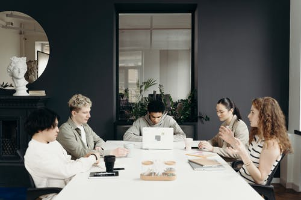

Problem-Solving Techniques in Project Management

Project Managers encounter a host of problems while managing the project, which they are expected to resolve. The wide spectrum of the levels of complexity requires them to have a wide variety of weapons in their arsenal in the form of problem-solving techniques. No matter how many risks they capture & how well they proactively plan for the unknown unknowns, there would be a number of issues they would be handling on a daily basis. With so many moving variables defining the fate of the project, the nature of problems varies with the project's size, their business objective, stakeholders involved, etc. These problems can be viewed as the pieces of the larger Jigsaw puzzle, i.e. the larger project environment, and only when these pieces are put at their right place can we solve the larger puzzle at hand.
In order to resolve these potential issues rising throughout the project lifecycle, the people skills of project managers take the driver’s seat. All the analytical techniques revolving around problem-solving center around having great teamwork. Techniques like Brainstorming, Root-cause analysis, and Fishbone (Ishikawa) diagram can only be efficient in yielding results when they are accompanied by team collaboration & that’s where the people domain skills of project managers come in handy. They would be a facilitator in aligning the team to come up with the right approach to solve the issues, for the entire project to look in a good shape. Certain Problem-Solving frameworks already in vogue combine the best of agile principles, lean, design thinking & new ways of working. These frameworks require cohesive collaborative teams to work on them & this can be a challenge with more distributed teams working remotely these days. Below are a few techniques project managers need to adopt to promote the problem-solving culture in a project environment:
Creating an Open & Positive environment: Creating the right environment which inspires positivism, altruism, openness & honesty plays a much larger role in catalyzing effective problem-solving approaches in the project. The team should feel secured & safe to openly communicate the potential issue they may foresee in the project, which would help PM to proactively nip it in the bud, without it getting compounded further in the latter part of the project. They should feel free to voice their concerns, opinions & ideas for finding solutions collectively to the problems at hand. Building trust within the team members makes them collaborate freely & honestly, which is the necessary component in the joint problem-solving exercise. There shouldn’t be any demarcation on specific expertise or skills they possess & they are allowed to comment on any area they feel like when voicing their opinions during brainstorming. PMs need to imbibe this culture within the team to promote team collaboration.
Building Relationships with Stakeholders: Relationship-building is another element in the human skills that PMs need to focus on. They always come to their rescue when they are faced with a plethora of issues which they’re unable to find their way out. PMs need to work with senior management & the boss especially when they need to communicate something significant happening on the project. Building honest personal relationships with them, eases PM to deal with complex issues or any escalations they might be faced with. Strong relationships with the client also come in handy for PMs while operating within stringent timelines or during any difficult deliberations with their executive management. Strong bonds with the team members help PMs to deliver the project smoothly as the team would go out of their way to deliver the deliverables to make their PM appear in a good light.
Encourage Creative thinking: As Project Managers or Leaders, it is their responsibility to encourage out-of-box thinking within the team. PMs lay processes & frameworks for the team to follow through & deliver as per the expectations, however, going out of their set approach to resolving any complex issues coming their way should be something PMs should encourage & demonstrate to their team. Such innovative thinking would make their team stand out from the rest & puts them in good stead in taking newer problems head-on. With this ever-evolving business landscape, the nature of problems will vary & so the team needs to look out for creative ways which could be unprecedented. The out-of-the-box solution could become risky at times, however, the team shouldn’t be shying away from taking such risks for the larger interest of the project & their organization.
Visualization: The power of visualization should not be underestimated. The retention power of the brain increases significantly when visuals are created. By visualizing a problem, it becomes simpler for everyone to understand the problem & look at it in the same way. With visualization, all the impacted elements of the problem are being visualized & thoroughly analyzed by the team. This becomes easier for the team to reach its root cause & thereby finding the solution. It is the most transparent way to surface misunderstandings sooner & gain alignment on the approach thought-upon. The team can not only look at the problem as a big picture, but also the moving puzzles involved along with their relationships and dependencies which can force them to think about all the possible alternatives. One need not be an artist to sketch one’s project problem in a picture, but reasonably enough to make one’s team understand the nature & nuances of the problem they are faced with.
Carefully evaluating all the possible alternatives & coming up with the right approach is one of the vital elements in problem-solving. And this can only happen when the team collectively flexes their creative muscle. Hence team collaboration forms the basis of problem-solving & PMs need to foster a collaborative culture within the team. Problem-solving requires one to articulate the problem clearly, where effective communication through visualization keeps the team aligned & in a good spirit. Project lifecycle can be impeded with several issues & resolving them in a timely fashion can only pave the way for its success.
Thanks for reading . Please feel free to share your comments and feedback.